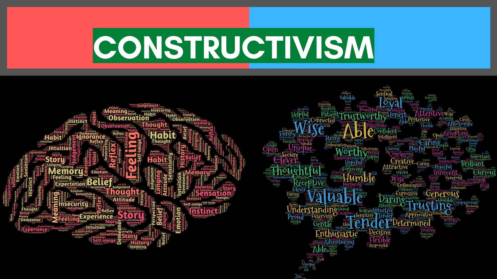
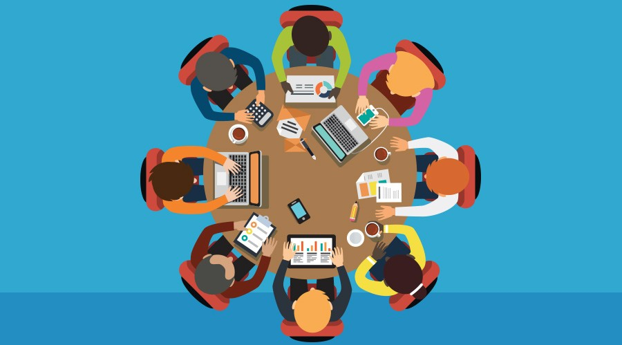
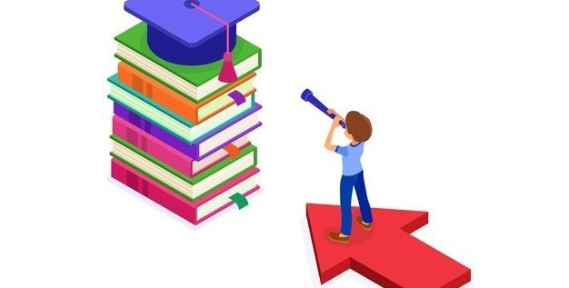

Estudante: Jean Nunes Ribeiro Araujo
"Para desenvolver competências é preciso, antes de tudo, trabalhar por problemas e por projetos, propor tarefas complexas e desafios que incitem os alunos a mobilizar seus conhecimentos e, em certa medida, completá-los." Perrenoud
As técnicas de ensino referem-se aos princípios gerais e pedagógicos que direcionam as estratégias de gerenciamento usadas para o ensino em sala de aula.
 Abordagens Teóricas | Questão de Aprendizado | ABP | Síntese Provisória da Espiral Construtivista | Espiral Construtivista | ABP e Arco de MaguerezA aprendizagem significativa é relacional, sua profundidade está na conexão entre os novos conteúdos e os conhecimentos prévios.
 Aprendizagem Significativa | Aprendizagem Centrada no Estudante | A caneta é mais poderosa que o teclado“Para pôr o diálogo em prática, o educador não pode colocar-se na posição ingênua de quem se pretende detentor de todo o saber; deve, antes, colocar-se na posição humilde de quem sabe que não sabe tudo.” Paulo Freire
TalkShow | Roteiro do TalkShow"Se a visão culposa do erro, na prática escolar continuar sendo predominante, não haverá como encará-lo como fonte de conhecimento pedagógico e a avaliação prosseguirá na sua trajetória de instrumento de seleção, discriminação, meritocracia e exclusão." Luckesi
Avaliação Dialógica | Instrumento de Avaliação para Relatórios TécnicosA Avaliação Institucional é um processo contínuo e permanente de autoconhecimento e de reflexão, visando a aprimorar a qualidade de ensino, pesquisa, extensão e gestão administrativa.
 Indicadores da Avaliação Institucional | Avaliação Institucional em cursos de ensino superior | Avaliação IN LOCO: Informativo INEPA gestão educacional envolve todos os processos de uma instituição escolar. Desde o setor administrativo, até o pedagógico, cabendo aos gestores otimizar as atividades diárias e aumentar a eficiência do ensino dentro da instituição.